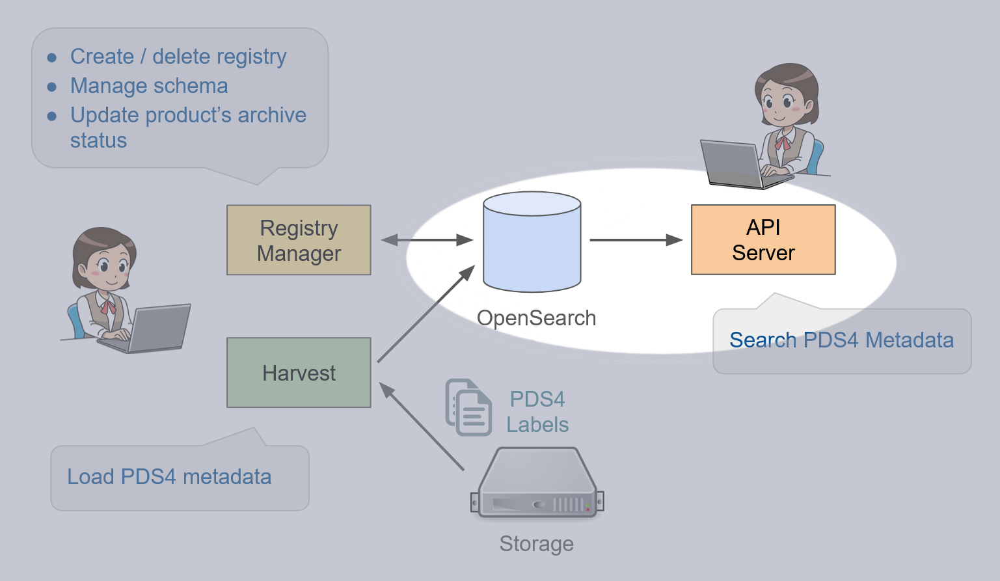
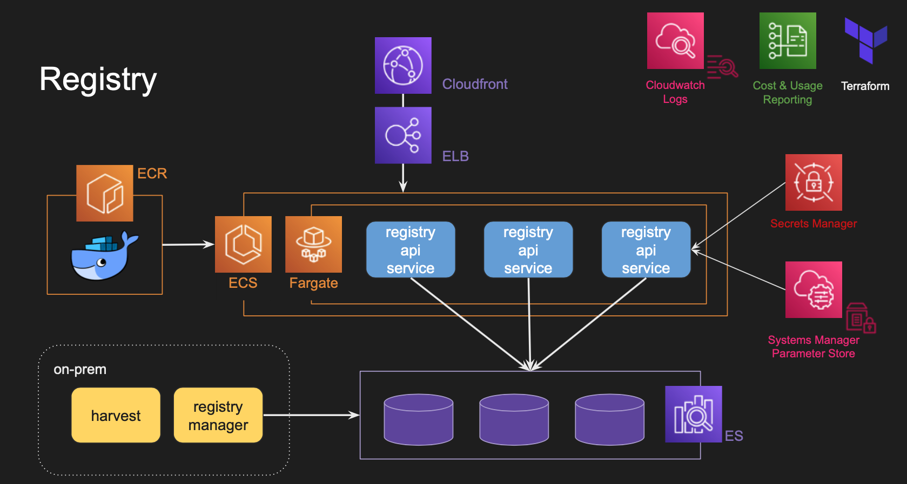
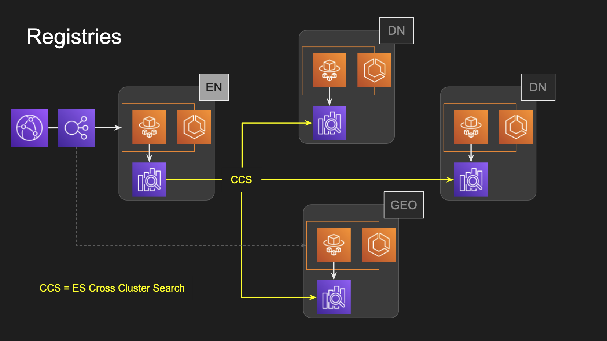

The Registry API Service Cloud Architecture¶
On-Prem vs. Cloud¶
In a typical on-premise deployment, the PDS Registry Application is composed, server-side, of a ReSTful API Server and an OpenSearch database. The users submit queries to the API which queries OpenSearch for building the responses.
Both components of which are highlighted below:
Given the stateless nature of the API service, scaling is a matter of placing a load balancer in front of a number of dedicated hosts which run copies of the service. While relatively minor in complexity, this strategy nonetheless constitutes a significant administrative overhead and potentially wastes resources that must be running in anticipation of peak loads that run largely idle for the remaining time. These issues are addressed by two of the key advantages of cloud deployments.
The API service’s cloud architecture is given in the diagram below. While seemingly more complex than an on-prem deployment, the utilization of AWS services simplifies administration, streamlines scaling with little idle resources and better secures management of sensitive data such as Elasticsearch credentials.
The centerpiece of the cloud architecture is the use of AWS Fargate, a flavor of the Elastic Container Service (ECS) which supports the execution of containerized applications (tasks) without requiring explicit provisioning of compute resources. The images for these application containers are placed in and pulled from the Elastic Container Registry (ECR). Each service instance connects to Elasticsearch, with the necessary credentials injected into each container by the Secrets Manager. Other non-sensitive run-time configuration is provided by the Systems Manager Parameter Store.
Amazon’s content delivery network, Cloudfront, is placed in front of the Elastic Load Balancer (ELB). Cloudfront provides high-speed, low-latency access while also preventing from unintentional or malicious bulk download of data.
The processing of data by Harvest and push to Elasticsearch by the Registry-manager are still performed on-premise, the latter connecting directly to Elasticsearch, access to which is controlled by authentication and IP whitelisting.
EN’s Centralized Registry API Service¶
The Engineering Node’s Registry API Service is the central point from which received search requests are disseminated to all discipline nodes (DNs) to provide aggregated, global results. This strategy leverages Elasticsearch’s cross-cluster search (CCS) capability in which the central instance (i.e. EN’s) forwards queries to all instances which have been designated as remotes. See figure below.
Requests can be directed to a particular DN’s Registry API Service by specifying the DN’s abbreviated name (e.g. ‘GEO’) as the value of the HTTP header ‘x-request-node’ along with the request. If this header is not specified, the request is routed to the EN registry.